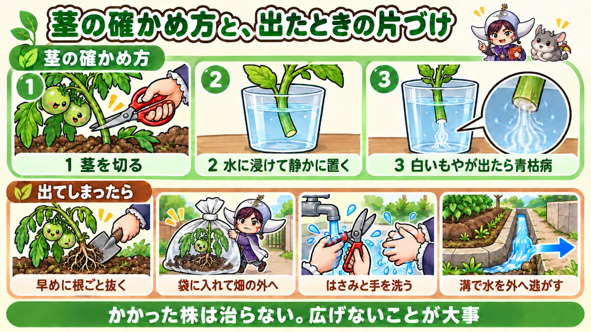
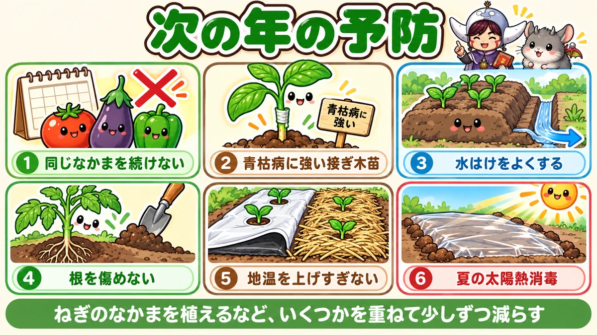

青枯病の決定版｜トマト・なす・ピーマンが緑のまま急にしおれる原因と、見分け方・出たときの片づけ・次の年の予防
📖 この記事の目次
この記事で分かること
- 青枯病は、土の中にいる細菌が根から入りこみ、茎の中の水の通り道をふさいでしまう病気です。葉が緑色のまま、急にしおれるのが特徴です。
- トマト、なす、ピーマン、じゃがいもなど、ナスのなかまに多く出ます。気温と地温が上がる梅雨の終わりから夏に出やすくなります。
- はじめは、晴れた昼にしおれて、朝や夕方、くもりの日には少し戻ります。これをくり返しながら、やがて戻らなくなり、枯れてしまいます。
- かかった株は治りません。疑わしい株は早めに抜いて、畑の外で処分します。はさみや手を介して、まわりの株にもうつります。
- 細菌は土の深いところに何年も残ります。次の年は、同じなかまの野菜を同じ場所に植えない、水はけをよくする、病気に強い台木の接ぎ木苗を使う、といった予防をします。
7月、トマトの実が色づきはじめたころ。昨日まで元気だった株が、昼すぎに見に行ったら、葉が緑色のままぐったりとしおれていた。水をたっぷりやっても、夕方には少し戻るものの、次の日の昼にはまたしおれる。数日後には、株全体が枯れてしまった。こんな経験はありませんか。
それは、青枯病かもしれません。青枯病は、家庭菜園でも多く見られる、とてもやっかいな病気です。この記事では、青枯病の原因と見分け方、出てしまったときの対処、次の年に向けた予防まで、順番に書いていきます。
この記事の読み方
いま、まさに株がしおれていて困っている人は、「見分け方」と「出てしまったら」から読んでください。次の年に向けて準備したい人は、「次の年に向けた予防」と「植える前のチェックリスト」が役に立ちます。
早見：青枯病
- 原因：土の中にいる細菌（青枯病菌）
- かかりやすい野菜：トマト、ミニトマト、なす、ピーマン、ししとう、じゃがいもなど（ナスのなかま）。ほかの野菜にも出ることがある
- 出やすい時期：梅雨の終わりから夏。地温が上がるころ
- 症状：葉が緑のまま、晴れた昼に急にしおれる。朝夕やくもりの日は少し戻る。くり返すうちに戻らなくなって枯れる
- 確かめ方：茎を切って、切り口をコップの水に浸けると、白いもやのような液がにじみ出てくる
- 出たら：治らない。疑わしい株は早めに抜いて、畑の外で処分する
- 次の年の予防：連作を避ける、水はけをよくする、病気に強い台木の接ぎ木苗、根を傷めない

青枯病を知る
土の中の細菌が原因
青枯病は、葉や茎の表面につく病気ではなく、土の中にいる細菌が原因の病気です。細菌は、根の小さな傷口から植物の中に入りこみます。
茎の中の水の通り道をふさぐ
植物の中に入った細菌は、根から葉へ水を運ぶ管（導管）の中で増えていきます。増えた細菌で管がつまったり、傷んだりすると、水が葉まで上がらなくなります。そのため、葉は緑色のまま、しおれてしまうのです。「青いまま枯れる」ことから、青枯病と呼ばれます。
土の深いところに長く残る
青枯病の細菌は、土の表面だけでなく、深いところにもひそんでいます。数十cmから、場所によっては1mほどの深さにいることもあると言われます。いちど出た畑では、細菌が土の中に何年も残り、また同じなかまの野菜を植えると、くり返し出やすくなります。
水を伝って広がる
細菌は、土の中の水を伝って移動します。雨が続いて土が湿っていると、広がりやすくなります。いちど1株に出ると、根がつながっているとなりの株にもうつり、畝全体に広がることがあります。
ナスのなかま以外にも出る
青枯病は、トマトやなすなどナスのなかまに多い病気ですが、ほかの野菜にも出ることがあります。きゅうりやメロンなどのうりのなかま、大根などにも出ると言われます。ナスのなかまの連作だけを気にしていると、見落とすことがあります。
しおれる病気は、ほかにもある
株がしおれる病気は、青枯病だけではありません。土の中のカビが原因で、下の葉から黄色くなりながらしおれていく病気もあります。青枯病は、葉が緑色のまま、急にしおれるのが大きなちがいです。葉の色と、しおれ方の速さを、あわせて見るようにします。
出やすい条件
地温が高い
青枯病の細菌は、地温が上がると活発になります。地温が20℃を超えるころから出はじめ、25〜30℃くらいになると、症状が一気に進むとされます。梅雨の終わりから夏にかけて多いのは、このためです。黒いマルチで地温が上がりすぎると、出やすくなることもあります。
梅雨の長雨のあと
雨が続いて土が湿り、そのあと晴れて地温が上がる、梅雨明けのころに、一気に広がることがよくあります。
水はけの悪い土
雨のあとに水たまりができる畑、乾くとかちかちに固まる畑、地下の水の位置が高い畑（まわりが田んぼの畑など）で出やすくなります。
根の傷
細菌は、根の傷口から入ります。土寄せや中耕で根を切ったとき、根を食べる虫（センチュウ、コガネムシの幼虫など）に傷つけられたとき、植えつけのときに根を傷めたときなどに、入りやすくなります。
根が深く伸びたころ
トマトやなすのように根を深く伸ばす野菜は、育って根が深いところまで届いたときに、深くにひそんでいる細菌にふれて感染しやすくなります。実がつきはじめて収穫が始まるころに、急にしおれることが多いのは、このためと考えられます。
同じなかまの連作
同じ場所で、トマトやなすなどナスのなかまを続けて作っていると、土の中の細菌が増え、出やすくなります。
見分け方
しおれ方を見る
- 晴れた昼に、葉が緑色のまま、急にぐったりしおれる
- 朝や夕方、くもりの日には、少し戻る
- 水をやっても、昼のしおれは戻らない
- はじめは株の一部の枝だけしおれることもある
- しおれては戻る、をくり返しながら、数日から2週間ほどで、戻らなくなって枯れる
茎の切り口を水に浸けてみる
青枯病かどうかを確かめる方法があります。しおれた株の茎を、地際の少し上で切り取り、切り口を、水を入れた透明なコップに浸けて、しばらく静かに置きます。切り口から、白いもやのような液が、糸を引くようににじみ出てきたら、青枯病の可能性がとても高いと考えられます。これは、茎の中で増えた細菌が、水の中に流れ出てきたものです。
確かめ方の手順
- 透明なコップに、水を入れておく
- しおれた株の茎を、地際から少し上のところで切る。切るのは、抜くと決めた株だけにする
- 切り口を下にして、茎をコップの水に浸ける。コップを動かさず、静かに置いておく
- 横から、明るいほうに透かして、切り口のあたりを見る
- 白いもやや、糸のようなすじが、水の中へゆらゆらと流れ出てきたら、青枯病の可能性が高い
茎を切った時点で、その株はもう助かりません。この確かめ方は、「抜くかどうか迷っている株」に使うというより、「この場所が青枯病に汚れているかどうか」を知るための手がかりと考えます。次の年に、どこに何を植えるかを決めるときに役立ちます。確かめに使ったはさみとコップは、そのあとほかの株に使う前に、よく洗っておきます。
はじめに、根の虫を疑う
株元を少し掘ってみて、白い幼虫などがいないか、根が食べられていないかを見ます。虫が見つからず、根もそれほど傷んでいないのにしおれているときは、青枯病の疑いが強くなります。
茎の中の色を見る
茎を切ると、中の水の通り道の部分が、茶色っぽく変色していることがあります。
ほかの原因とのちがい
- 水切れ：夕方や朝にはしっかり戻る。水をやると、数時間で戻る。土の中まで乾いている
- 根腐れ：土がいつも湿っていて、下の葉から黄色くなる。根が茶色く傷んでいる
- 根を食べる虫：株元を掘ると、白い幼虫などが出てくる。根が少なくなっている
- 青枯病：葉が緑のまま、昼にしおれ、朝夕に少し戻るをくり返す。水をやっても戻らない。切り口から白い液が出る
暑い日には、元気な株でも、昼に一時的にしおれることがあります。まず水をやってみて、数時間たっても戻らないか、根や土の様子に原因がないかを確かめます。

出てしまったら
梅雨から夏の見回り方
青枯病は、早く気づくほど、まわりへ広がるのを抑えられます。梅雨の終わりから夏は、次のように見回ります。
- 晴れた日の昼すぎに、一度畑を見る。朝だけ見ていると、昼のしおれに気づけない
- しおれている株があったら、夕方にもう一度見る。戻っているか、戻っていないか
- 水切れを疑うときは、まず株元の土を指で掘って、中まで乾いているかを確かめる
- しおれた株と、そのとなりの株に目印をつけて、次の日の昼も同じ株を見る
- 雨のあとは、畝や通路に水がたまっていないかを見る
1株だけの一時的なしおれなら、暑さのせいのこともあります。2日、3日と続けて、同じ株が昼にしおれるときは、青枯病を疑います。
かかった株は治らない
残念ながら、青枯病にかかった株を治す方法はありません。そのまま置いておいても、収穫はほとんど期待できず、やがて枯れてしまいます。
疑わしい株は、早めに抜く
かかった株を置いておくと、根から土の中に細菌が増え、まわりの株へ広がるもとになります。疑わしい株は、思いきって早めに抜きます。根もできるだけいっしょに掘り上げます。となりの株の根を傷めないよう、そっと抜きます。
抜くときの手順
- 晴れて、土が少し乾いている日を選ぶ。雨の日や、土がどろどろの日は、土や水といっしょに細菌を広げやすい
- 支柱からひもを外し、株元から少しはなれたところにスコップを入れて、根ごと持ち上げる
- 根についた土は、その場で強くはたかず、そのまま袋に入れる
- 抜いた穴にちぎれた根が残っていたら、拾って同じ袋に入れる
- 使ったスコップや手袋は、ほかの畝に移る前に、水で土を洗い流しておく
畑の外で処分する
抜いた株は、細菌を含んでいるので、畑の中に置いたり、堆肥に入れたりせず、袋に入れて口をしばり、ごみとして処分します。根についた土も、なるべく畑に落とさないようにします。
はさみと手を消毒する
かかった株を切ったはさみで、ほかの株のわき芽や枝を切ると、はさみについた細菌がうつることがあります。かかった株にふれた道具は、使い終わったらよく洗ってふき、消毒します。かかった株の作業は最後にし、そのあとで元気な株にさわらないようにします。わき芽かきなどは、はさみを使わず手で摘むほうが、うつす心配が少なくなります。
水はけをよくする
まだ元気な株を少しでも守るために、通路に溝を切ったり、溝を深くしたりして、水はけをよくします。水を伝って細菌が広がるのを、少しでも抑えます。
溝は、畑の外まで水を逃がす
畝を高くして通路の溝を深くしても、溝にたまった水の行き場がないと、水は畝の中にしみこんでしまいます。溝は、畑のいちばん低いほうへ向かって少しずつ下がるように切り、水が畑の外へ流れ出るようにします。雨のあとに、溝の水がどこにたまっているかを見ると、直すべき場所が分かります。
その年の残りの株を守る
1株に出たら、その畝のほかの株も、しばらくは毎日昼に様子を見ます。残った株のわき芽かきは、はさみを使わず手で摘み、かかった株にふれたあとは、手を洗ってからさわります。実がついている株は、少し早めに収穫しておくと、もしあとからしおれても、収穫が無駄になりにくくなります。
跡地には、同じなかまを植えない
抜いた跡地には、トマトやなす、ピーマンなど、同じなかまの野菜を植えないようにします。
次の年に向けた予防
1. 同じなかまを続けて作らない
青枯病が出た場所では、トマト、なす、ピーマン、じゃがいもなど、ナスのなかまの野菜を、何年かあけて作るようにします。
2. 病気に強い台木の接ぎ木苗を使う
接ぎ木苗は、病気に強い別の植物（台木）の根に、育てたい野菜をつないだ苗です。青枯病に強い性質を持つ台木を使った接ぎ木苗を選ぶと、かかりにくくなります。苗のラベルや説明に、どの病気に強い台木かが書いてあるので、青枯病に強いものを選びます。値段は高くなりますが、青枯病に悩んでいる畑では、いちばん確実な方法と言えます。
接ぎ木苗は「何に強いか」を確かめる
接ぎ木苗といっても、台木によって、強い病気がちがいます。葉の病気に強い台木を使った接ぎ木苗を植えても、青枯病には強くない、ということがあります。「接ぎ木苗だから大丈夫」と思わず、ラベルに青枯病に強いと書いてあるかを見て選びます。植えつけるときは、つないだところ（接ぎ口）を土に埋めないように、浅めに植えます。接ぎ口から上の穂木の部分から根が出て土に届くと、せっかくの台木の強さが生かせなくなります。
3. 水はけをよくする
土づくりのときに、堆肥をたっぷり入れ、深く耕して、水はけのよい土にします。畝を高めにし、通路に溝を切って、雨のあとに水がたまらないようにします。
4. 根を傷めない
植えつけのときは、根鉢をくずさずに植えます。土寄せや中耕のときは、株のすぐそばを深く掘らないようにします。根を傷つけるセンチュウやコガネムシの幼虫などの対策もしておきます。
根を傷つける虫に備える
植えつけ前に土を耕すとき、コガネムシの幼虫のような白い虫が出てきたら、拾って取りのぞいておきます。根を食べる虫が多い畑では、根の傷が増え、青枯病の細菌が入りやすくなります。土の中の虫を減らすことも、遠回りですが青枯病の予防になります。
5. 地温を上げすぎない
夏の暑い時期に、黒いマルチで地温が上がりすぎると、青枯病が出やすくなることがあります。夏は、白黒マルチや銀色のマルチなど、地温を上げにくいマルチを使ったり、敷きわらで土をおおったりする方法もあります。
株元にわらを敷く
梅雨明けからの暑い時期は、株元にわらや刈り草を敷くと、土の温度が上がりすぎるのを和らげられます。雨のときに、土がはね返って葉や茎につくのも減らせます。わらは、株元の茎に直接ふれないよう、少しすき間をあけて敷きます。
水やりは、株元に静かに
水やりは、勢いよく土をえぐるようにかけず、株元に静かにしみこませます。毎日たくさんやって土がいつも湿っている状態は、細菌が動きやすくなるので避けます。土の表面が乾いてから、たっぷりやるのが基本です。
6. 肥料、特に窒素を効かせすぎない
肥料が多すぎて、株がやわらかく育つと、病気にかかりやすくなります。肥料は量を守ります。
7. 植える場所を変える
青枯病が何度も出る場所は、ナスのなかまを植えるのをやめ、別の場所で育てるのが確実です。

土をきれいにする方法
太陽熱消毒
夏の暑い時期に、土を耕して水をたっぷりまき、透明のビニールで畝をおおって、数週間おいておくと、太陽の熱で土が温まり、土の中の病原菌や雑草のタネを減らせます。米ぬかなどを混ぜてからおおう方法もあります。ただし、青枯病の細菌は土の深いところにもいるので、表面近くを温める太陽熱消毒だけでは、すべてを退治するのは難しいとされます。
太陽熱消毒の手順
- 青枯病が出た株を抜き、目立つ根を拾って片づける
- 畝を耕して、スコップの刃が入るくらいの深さの溝を掘る
- 溝に米ぬかをまく。決まった量はないので、土の表面がうっすら見えなくなる程度を目安にする
- 土をもどして、水をたっぷりまく。土の中までしっかり湿らせる
- 透明のビニールで畝をすき間なくおおい、まわりを土で押さえて、風で飛ばないようにする
- 真夏の晴れた日が続く時期に、数週間そのままにしておく
梅雨が明けて、晴れて暑い日が続く時期が向いています。くもりや雨が多いと、土が十分に温まりません。ビニールを外したあとは、深く耕しすぎず、温まった表面近くの土をそのまま使います。
ねぎのなかまを植える
青枯病が出たあとの畑に、にんにくやねぎなど、ねぎのなかまの野菜を植えると、根のまわりに住む微生物の働きで、土の中の病原菌が減る、と言われています。トマトやなすの株元に、にらをいっしょに植えて、根をからませる方法も紹介されています。どれも、完全に防げるわけではありませんが、連作を避けることと組み合わせて取り入れる価値はあります。
にらをいっしょに植える方法
にらを、トマトやなすの苗といっしょに植える方法もあります。植え穴に、にらの株と、トマトやなすの苗を、根がからみ合うように並べて植えます。にらはタネから育てると大きくなるまでに時間がかかるので、春に苗を買うか、すでに育っている株を分けて使うと手軽です。これも、青枯病を完全に防ぐものではなく、ほかの予防と組み合わせて使います。
薬による土の消毒
土を消毒する薬もありますが、扱いに注意が必要なものが多く、家庭菜園では、まず連作を避ける、接ぎ木苗を使う、水はけをよくする、といった方法を優先します。
野菜ごとの注意
トマト、ミニトマト
もっとも青枯病が出やすい野菜のひとつです。梅雨明けから夏、実が色づきはじめるころに、急にしおれることがよくあります。何年も同じ場所で作っている場合は、接ぎ木苗に切りかえることを考えます。わき芽かきは、はさみを使わず手で行います。
なす
なすも出やすい野菜です。枝の一部だけがしおれることもあるので、昼の様子をよく見ます。
ピーマン
梅雨の後半から出やすくなります。夏の暑さで弱っただけなのか、青枯病なのかを、水をやって数時間後の様子と、茎の切り口で確かめます。
ししとう
ししとうも、根を深く伸ばすので、梅雨明けから夏にしおれることがあります。ピーマンと同じように、昼と夕方のしおれ方を見て判断します。
じゃがいも
じゃがいもも、ナスのなかまなので、青枯病が出ることがあります。トマトやなすを作った場所と、じゃがいもを作る場所が重ならないようにします。
きゅうり、メロン、大根
ナスのなかまほど多くはありませんが、出ることがあると言われます。うりのなかまは根が浅めなので、トマトやなすほど深いところの細菌にはふれにくいと考えられますが、青枯病が出た場所では、念のため様子をよく見ます。
しょうが
しょうがにも、青枯病が出ることがあります。夏に、葉が緑のまま急にしおれて倒れる株が出たら、疑います。しょうがは、病気のない種しょうがを使うことが、何よりの予防になります。
畑が青枯病に汚れてしまったら
植えた場所を記録しておく
青枯病は、同じ場所でくり返し出ます。畑の簡単な図を描いて、どの畝に、いつ、何を植えたか、どこで青枯病が出たかを書きこんでおきます。次の年の春に、植える場所を決めるときに見返します。
プランターで育てる
畑の中で、ナスのなかまを植えられる場所がなくなってしまったら、トマトやなすを、新しい培養土を入れたプランターや大きめの鉢で育てる方法があります。畑の土を混ぜずに使えば、畑の細菌を持ちこまずに済みます。プランターは、畑の土の上に直接置かず、ブロックなどの上に置くと、雨のはね返りや水を通して細菌が入るのを防ぐ助けになります。
何年かかけて、少しずつ減らす
細菌は深いところにもいるので、1年で土をきれいにすることはできません。同じなかまを植えない、水はけを直す、ねぎのなかまを植える、太陽熱消毒をする、といったことを何年か続けて、少しずつ減らしていきます。
植える前のチェックリスト
春、トマトやなすを植える前に、次のことを確かめておきます。
- 去年、青枯病が出た場所ではないか（記録を見返す）
- 去年、ナスのなかまを植えた場所ではないか
- 雨のあとに、水がたまりやすい場所ではないか
- 通路の溝は、畑の外まで水が流れるようにつながっているか
- 青枯病が心配な場所なら、青枯病に強い台木の接ぎ木苗を用意したか
- 土を耕したときに、根を食べる虫が出てこなかったか
- 肥料の量は、袋の目安を守っているか
当てはまるものが多い場所は、ナスのなかまを避けて、ほかの野菜を植える場所にまわします。
季節ごとにやること（一般的な地域の目安）
- 2〜4月：植える場所を決める。前の年に青枯病が出た場所は避ける。接ぎ木苗を選ぶ。堆肥を入れて深く耕し、高めの畝に
- 5〜6月：植えつけは根鉢をくずさずに。梅雨に備えて、通路に溝を切る
- 6〜8月：梅雨明けから地温が上がる時期。昼のしおれ方をよく見る。疑わしい株は茎で確かめ、早めに抜く
- 7〜8月：青枯病が出た場所は、片づけのあとに太陽熱消毒
- 9〜11月：青枯病が出た場所に、にんにくやねぎなどを植える
説明が分かれるところ
高畝にすれば防げるか
水はけをよくするために畝を高くすると、細菌が水を伝って広がるのを抑える助けになる、と言われます。一方で、畝をかなり高くしても、細菌が多い畑では出てしまった、という声もあります。高畝は予防のひとつとして有効ですが、それだけで防ぎきれるものではない、と考えます。
ねぎのなかまを植えると、どのくらい減るか
ねぎのなかまの野菜を植えると、土の中の病原菌が減るという考え方があり、効いたという声もあります。一方、1年植えただけでは十分に減らず、何年か続ける必要がある、という意見もあります。期待しすぎず、連作を避けることと組み合わせます。
黒いマルチと、白黒マルチ
春先は、黒いマルチで地温を上げると、苗の根づきがよくなります。一方で、夏に地温が上がりすぎると、青枯病が出やすくなることがあります。青枯病が心配な畑では、夏も地温が上がりにくい白黒マルチを使う、あるいは梅雨明けごろに黒いマルチの上にわらを敷く、といった工夫をする人もいます。どちらがよいかは、地域や畑の条件によって変わります。
すぐ抜くか、実が色づくまで待つか
色づきかけた実がついていると、あと数日だけ待って収穫してから抜きたい、と思うものです。ただ、置いておくあいだにも、根から土へ細菌が出て、となりの株へ広がるおそれがあります。待つことで得られる実の数と、まわりの株を失うおそれをくらべると、早めに抜くほうが、畑全体としては損が少ないと考えます。青い実でも、大きくなったものは収穫して、室内で追熟させる方法もあります。
高い畝は、どのくらい高くすればよいか
青枯病の予防のために、ふつうより畝を高くする人は多くいます。ただ、決まった高さはなく、畑の水はけによって必要な高さは変わります。高さよりも、雨のあとに水がたまらないこと、溝の水が畑の外へ流れていくことを目安にします。
よくある失敗
水切れだと思って、毎日たっぷり水をやった
青枯病の株は、水をやっても戻りません。土が湿りすぎると、かえって細菌が広がりやすくなります。
しおれた株を、しばらく様子見で残した
その間に、細菌が土の中で増え、まわりの株にも広がることがあります。疑わしい株は早めに抜きます。
かかった株を切ったはさみで、ほかの株を切った
はさみを通して、元気な株にもうつることがあります。道具は消毒し、かかった株の作業は最後にします。
抜いた株を、堆肥の山に入れた
細菌が生き残り、堆肥を使った場所で、また出るもとになります。畑の外で処分します。
同じ場所に、またトマトを植えた
土の中に細菌が残っているので、また出やすくなります。何年かあけるか、接ぎ木苗を使います。
葉の病気に強い接ぎ木苗で、安心していた
接ぎ木苗でも、台木が青枯病に強いとは限りません。どの病気に強い台木なのかを、ラベルで確かめます。
接ぎ木苗を、深く植えた
接ぎ口が土に埋まると、上の部分から根が出て、台木の強さが生かせなくなることがあります。接ぎ口は土の上に出るように植えます。
畝を高くしたので、溝の手入れをしなかった
溝の水の行き場がないと、水は畝の中にしみこみます。雨のあとに、溝の水が畑の外へ流れているかを見ます。
よくある質問
青枯病になった株の実は、食べられますか
実そのものに害があるわけではないので、収穫できた実は食べられます。ただし、株はやがて枯れるので、熟すまで待てないことがほとんどです。
同じ畝のほかの野菜にもうつりますか
ナスのなかまのほかにも、きゅうりやいちご、大根など、青枯病にかかる野菜はあると言われます。同じ畝で育てている野菜も、しばらくはよく見ておきます。
何年あければ、また植えられますか
土の状態によってちがい、決まった年数はありません。細菌は土の中に何年も残るとされるので、少なくとも数年はあけるか、接ぎ木苗を使うのが安心です。
プランターでも出ますか
市販の新しい培養土を使っていれば、出ることは少ないでしょう。ただし、畑の土を使ったり、青枯病が出たプランターの土を使い回したりすると、出ることがあります。青枯病が出たプランターの土は、使い回さずに処分します。
薬をまけば治せませんか
かかった株を治す薬はありません。土を消毒する薬はありますが、深いところにいる細菌までは届きにくく、扱いにも注意が必要です。家庭菜園では、薬にたよるより、連作を避ける、接ぎ木苗、水はけ、の3つを重ねるほうが現実的です。
抜いたあと、すぐ別の野菜を植えてもいいですか
ナスのなかまや、青枯病にかかりやすい野菜でなければ、植えてもかまいません。秋なら、にんにくやねぎ、玉ねぎなど、ねぎのなかまを植えると、跡地の使い方としても無駄がありません。
となりの株も、しおれはじめました
同じ畝で、となりの株も同じようにしおれはじめたら、根を通して広がっている可能性があります。しおれた株は早めに抜き、溝を深くして水はけをよくします。まだ元気な株からも、わき芽や実を早めに収穫しておくと、少しでも無駄が減ります。
雨よけをすれば防げますか
雨よけは、葉や実の病気を減らすのには役立ちます。ただ、青枯病は土の中の細菌が原因なので、雨よけだけでは防げません。畝に雨が直接当たらず、土が湿りすぎるのを和らげる助けにはなります。
冬のあいだに、細菌はいなくなりませんか
土の深いところや、残った根のかけらの中で冬を越すので、次の年にもまた出ることがあります。冬に耕すときも、去年青枯病が出た場所だということを忘れないようにします。
市販の苗なら、安心ですか
苗そのものより、植える畑の土に細菌がいるかどうかが問題です。どんなに元気な苗でも、細菌の多い場所に植えれば、かかることがあります。苗選びと同じくらい、植える場所選びが大事です。
学ぶ：青枯病のしくみ🔬
なぜ、葉は緑のまましおれるのか
葉が黄色くなったり枯れたりする病気の多くは、葉そのものが傷んでいるか、栄養が足りなくなっているものです。青枯病は、葉は元気なまま、根から葉へ水を運ぶ管がふさがれてしまう病気です。水が届かないので、葉は緑色を保ったまま、急にしおれます。病気が進んで、葉が水不足の状態が続くと、最後には枯れてしまいます。
なぜ、昼にしおれて朝夕に戻るのか
晴れた昼は、葉から水がたくさん出ていくので、水を運ぶ管が少しでもふさがっていると、水の供給が追いつかなくなり、しおれます。朝夕やくもりの日は、葉から出ていく水が少ないので、ふさがれていない管だけでもなんとか水が足り、少し戻ります。病気が進んで、ふさがる管が増えると、朝夕でも戻らなくなります。
なぜ、夏野菜に多いのか
青枯病の細菌は、地温が高くなると元気になります。夏に育つトマトやなすは、ちょうど細菌が元気になる時期に、畑で根を張っています。さらに、トマトやなすは根を深く伸ばすので、深いところにいる細菌にもふれやすくなります。根が浅く、涼しい時期に育つ冬野菜では、あまり問題になりません。
なぜ、切り口から白い液が出るのか
茎の中の水を運ぶ管の中では、細菌が非常にたくさん増えています。茎を切って水に浸けると、管の中の細菌が、切り口から水の中へ流れ出してきます。細菌がとても多いので、白いもやや糸のように見えるのです。この方法は、青枯病を見分ける手がかりとして、広く知られています。
なぜ、水はけが大事なのか
青枯病の細菌は、自分で長い距離を動くのは苦手で、土の中の水の流れに乗って広がります。水がたまりやすい土では、細菌が水といっしょに根のまわりへ運ばれ、となりの株の根にも届きやすくなります。水はけをよくすると、水が早く抜けるので、細菌が運ばれる機会が減ります。高い畝や溝が予防になると言われるのは、このためです。
なぜ、根の傷から入るのか
元気な根の表面は、細菌が簡単には入りこめないようになっています。ところが、根が切れたり、虫にかじられたりしてできた傷口は、細菌にとって入り口になります。傷口から入った細菌は、そのまま根の中の水の通り道に入りこみ、茎へと上がっていきます。土寄せや中耕で根を切らないこと、根を食べる虫を減らすことが予防になるのは、入り口を減らすためです。
なぜ、何年も土に残るのか
青枯病の細菌は、生きた植物がなくても、土の中や、土に残った根のかけらの中で、しばらく生きのびることができます。深いところにいる細菌は、耕しても、太陽熱消毒をしても、なかなか届きません。さらに、ナスのなかまのほかにも、雑草を含めて、細菌がすみつける植物があると言われます。そのため、いちど出た畑からは、簡単にはいなくなりません。
まとめ
ここまで読んでくださって、ありがとうございます！
青枯病のポイントを、もう一度まとめておきます。
- 青枯病は、土の中の細菌が根から入り、水の通り道をふさぐ病気。葉は緑のまましおれる
- トマト、なす、ピーマン、じゃがいもに多い。梅雨明けから夏、地温が上がるころに出やすい
- 昼にしおれ、朝夕に少し戻るをくり返す。水をやっても戻らない。切り口を水に浸けると白い液が出る
- かかった株は治らない。早めに抜いて、畑の外で処分。はさみと手を消毒する
- 次の年は、同じなかまを続けて作らない、接ぎ木苗、水はけ、根を傷めない
- 太陽熱消毒やねぎのなかまの植えつけは、補助として組み合わせる
トマトやなすが昼にしおれていたら、まず水をやって、夕方にもう一度見に行ってみてください。戻らないときは、茎の切り口をコップの水に浸けて確かめるのが、次の一手です🍅
透明マルチ
夏の太陽熱消毒に。水をたっぷりまいた畝をすき間なくおおい、数週間そのままにして土を温めます。
![[商品価格に関しましては、リンクが作成された時点と現時点で情報が変更されている場合がございます。]](https://hbb.afl.rakuten.co.jp/hgb/5676ec31.2582035e.5676ec32.c4887243/?me_id=1296241&item_id=10004946&pc=https%3A%2F%2Fthumbnail.image.rakuten.co.jp%2F%400_mall%2Fotentosan%2Fcabinet%2Fimg%2Fgoods02%2Fmulti%2Ftoumei-multi_pb.jpg%3F_ex%3D240x240&s=240x240&t=picttext "[商品価格に関しましては、リンクが作成された時点と現時点で情報が変更されている場合がございます。]")

敷きわら
梅雨明けから株元に敷くと、地温が上がりすぎるのを和らげ、雨の泥はねも減らせます。
![[商品価格に関しましては、リンクが作成された時点と現時点で情報が変更されている場合がございます。]](https://hbb.afl.rakuten.co.jp/hgb/56bc2fb2.ff40a6e6.56bc2fb3.618f6a70/?me_id=1257026&item_id=10000211&pc=https%3A%2F%2Fthumbnail.image.rakuten.co.jp%2F%400_mall%2Fsharuka%2Fcabinet%2F09042254%2Fimgrc0081094692.jpg%3F_ex%3D240x240&s=240x240&t=picttext "[商品価格に関しましては、リンクが作成された時点と現時点で情報が変更されている場合がございます。]")
園芸ばさみ
しおれた株の茎を切って確かめるときに。使ったあとは洗ってから、ほかの株に使います。
![[商品価格に関しましては、リンクが作成された時点と現時点で情報が変更されている場合がございます。]](https://hbb.afl.rakuten.co.jp/hgb/56d22030.def85fa7.56d22031.b89fde86/?me_id=1250472&item_id=10022339&pc=https%3A%2F%2Fthumbnail.image.rakuten.co.jp%2F%400_mall%2Fplantz%2Fcabinet%2F01%2Ft-13.jpg%3F_ex%3D240x240&s=240x240&t=picttext "[商品価格に関しましては、リンクが作成された時点と現時点で情報が変更されている場合がございます。]")
あわせて読みたい

次に読む
記事一覧へ